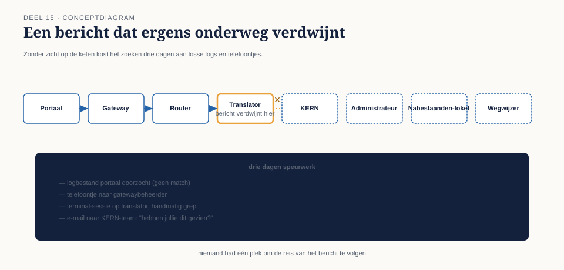

15.0 Het incident dat drie dagen kostte om te lokaliseren
Sectie 1 van 9Acht systemen, een broker, een event backbone, drie soorten endpoints — het landschap uit deel 11 tot en met 14 stond, en werkte. Tot een salariscorrectie van een grote werkgever spoorloos leek: de werkgever had een bevestiging gekregen (deel 3), de deelnemer had na drie weken nog niets op zijn rekening gezien, en niemand bij Meridiaan kon vertellen wáár in de keten — KERN, de recipient list, de content enricher naar het personeelssysteem, of ergens anders — het bericht was blijven steken.
Het kostte Caspars team drie dagen om het antwoord te vinden: het bericht had de content enricher (deel 13) bereikt, was daar door een tijdelijke fout in de fallback-logica in een lus terechtgekomen die het steeds opnieuw probeerde zonder ooit het dead letter channel te bereiken, en had zo, onzichtbaar, drie weken lang "gewerkt" zonder ooit te voltooien. Elke individuele component werkte naar behoren volgens zijn eigen logica. Niemand had een overzicht dat over de hele keten heen liep.
Dit is een ander probleem dan niveau 1 behandelde. Deel 9 loste op wat er gebeurt als een bericht definitief mislukt. Dit incident liet zien dat er ook een categorie tussenin bestaat: berichten die niet mislukken, niet slagen, en gewoon onzichtbaar ergens ronddraaien — en dat drie dagen zoeken door acht systemen, zonder gecentraliseerd overzicht, geen houdbare manier is om dat te vinden.

Dit deel — het eerste tweedagdelen-deel van de cursus, zoals de familieopzet voorschrijft voor onderwerpen die dat zwaartepunt vragen — behandelt vijf patronen die samen dit soort situaties voorkomen: de control bus, de wire tap, de detour, de message history, en de smart proxy.